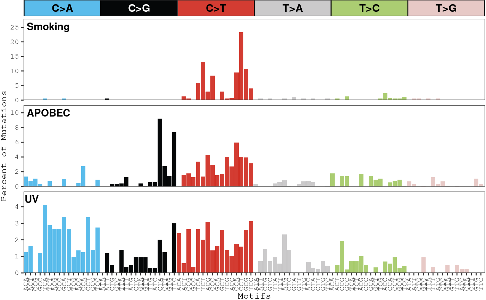
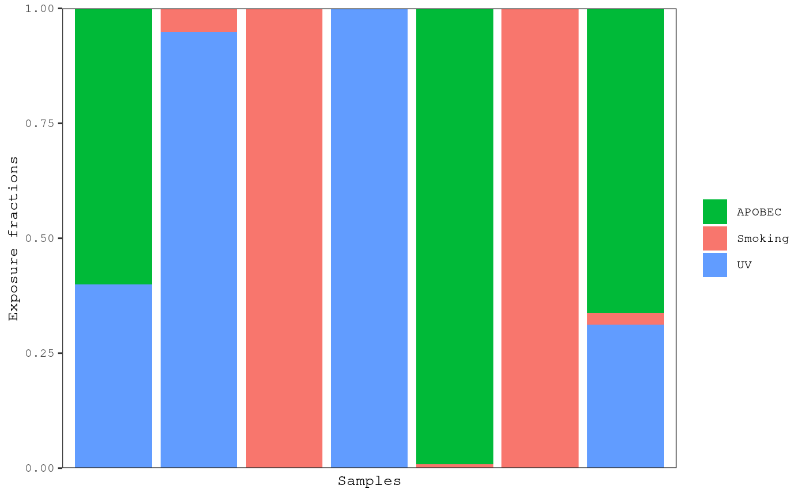
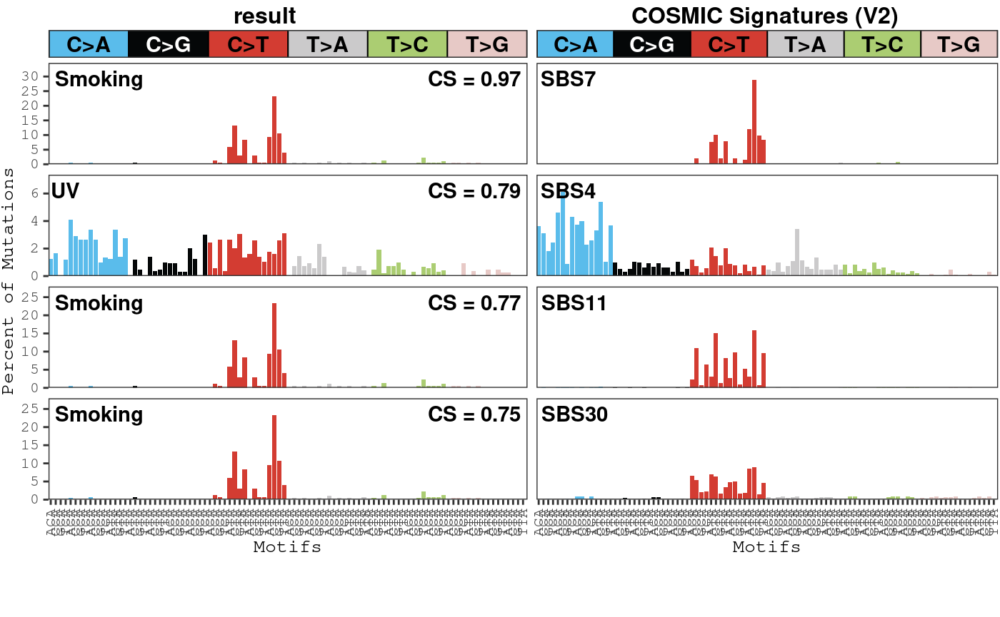
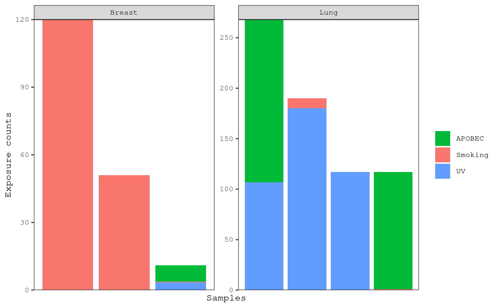
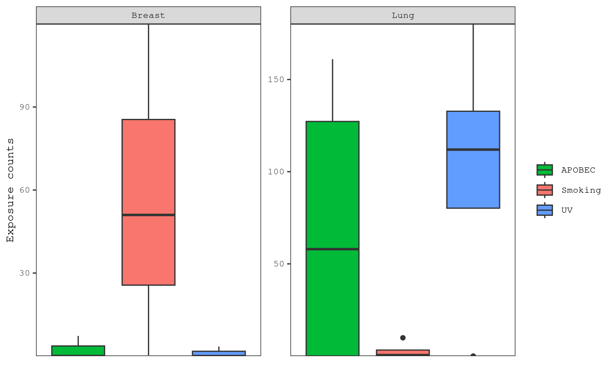
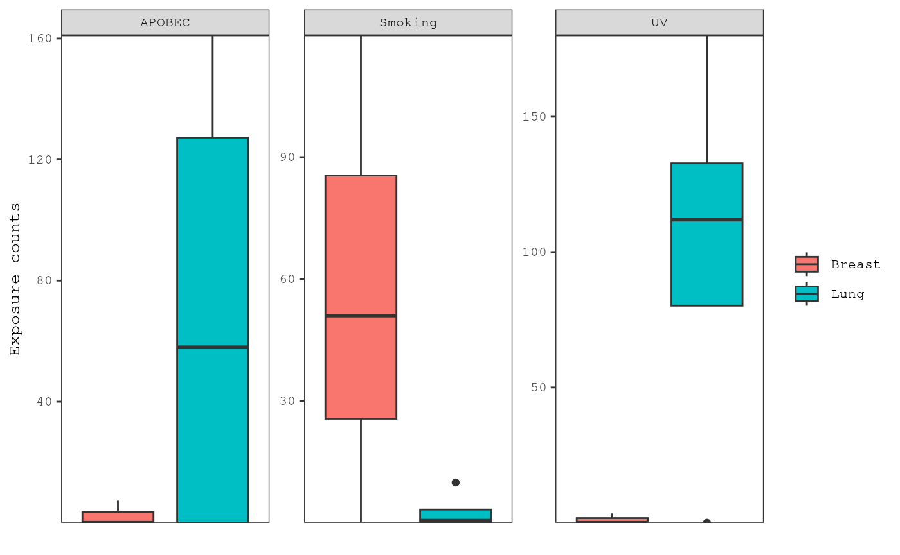
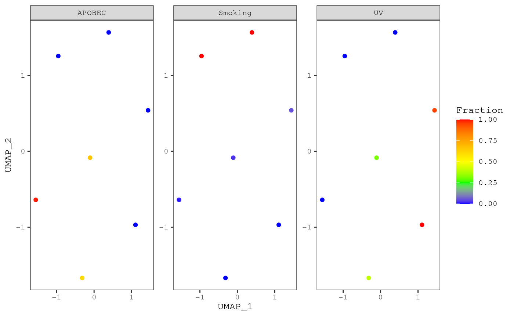

Mutational Signature Comprehensive Analysis Toolkit
Aaron Chevalier
Boston University School of MedicineJoshua Campbell
Boston University School of Medicinecamp@bu.edu Source:
vignettes/musicatk.Rmd
musicatk.RmdVignettes
Due to the range of features that are available in musicatk, we have prepared several vignettes to help you get started, which are all available at https://www.camplab.net/musicatk/
#Introduction A variety of exogenous exposures or endogenous biological processes can contribute to the overall mutational load observed in human tumors. Many different mutational patterns, or “mutational signatures”, have been identified across different tumor types. These signatures can provide a record of environmental exposure and can give clues about the etiology of carcinogenesis. The Mutational Signature Comprehensive Analysis Toolkit (musicatk) has utilities for extracting variants from a variety of file formats, contains multiple methods for discovery of novel signatures or prediction of known signatures, as well as many types of downstream visualizations for exploratory analysis. This package has the ability to parse and combine multiple motif classes in the mutational signature discovery or prediction processes. Mutation motifs include single base substitutions (SBS), double base substitutions (DBS), insertions (INS) and deletions (DEL).
Installation
Currently musicatk can be installed from on Bioconductor using the following code:
if (!requireNamespace("BiocManager", quietly = TRUE)) {
install.packages("BiocManager")
}
BiocManager::install("musicatk")To install the latest version from Github, use the following code:
if (!requireNamespace("devtools", quietly = TRUE)) {
install.packages("devtools")
}
library(devtools)
install_github("campbio/musicatk")The package can be loaded using the library command.
Setting up a musica object
In order to discover or predict mutational signatures, we must first set up our musica object by 1) extracting variants from files or objects such as VCFs and MAFs, 2) selecting the appropriate reference genome 3) creating a musica object, and 4) building a count tables for our variants of interest. Alternatively, a musica object can be created directly from a count table.
Extracting variants
Variants can be extracted from various formats using the following functions:
- The
extract_variants_from_vcf_file()function will extract variants from a VCF file. The file will be imported using the readVcf function from the VariantAnnotation package and then the variant information will be extracted from this object. - The
extract_variants_from_vcf()function extracts variants from aCollapsedVCForExpandedVCFobject from the VariantAnnotation package. - The
extract_variants_from_maf_file()function will extract variants from a file in Mutation Annotation Format (MAF) used by TCGA. - The
extract_variants_from_maf()function will extract variants from a MAF object created by the maftools package. - The
extract_variants_from_matrix()function will get the information from a matrix or data.frame like object that has columns for the chromosome, start position, end position, reference allele, mutation allele, and sample name. - The
extract_variants()function will extract variants from a list of objects. These objects can be any combination of VCF files, VariantAnnotation objects, MAF files, MAF objects, and data.frame objects.
Below are some examples of extracting variants from MAF and VCF files:
# Extract variants from a MAF File
lusc_maf <- system.file("extdata", "public_TCGA.LUSC.maf", package = "musicatk")
lusc.variants <- extract_variants_from_maf_file(maf_file = lusc_maf)
# Extract variants from an individual VCF file
luad_vcf <- system.file("extdata", "public_LUAD_TCGA-97-7938.vcf",
package = "musicatk"
)
luad.variants <- extract_variants_from_vcf_file(vcf_file = luad_vcf)
# Extract variants from multiple files and/or objects
melanoma_vcfs <- list.files(system.file("extdata", package = "musicatk"),
pattern = glob2rx("*SKCM*vcf"), full.names = TRUE
)
variants <- extract_variants(c(lusc_maf, luad_vcf, melanoma_vcfs))## | | | 0% | |============== | 20% | |============================ | 40% | |========================================== | 60% | |======================================================== | 80% | |======================================================================| 100%Choosing a genome
musicatk uses BSgenome
objects to access genome sequence information that flanks each mutation
which is used bases for generating mutation count tables. BSgenome
objects store full genome sequences for different organisms. A full list
of supported organisms can be obtained by running
available.genomes() after loading the BSgenome library.
Custom genomes can be forged as well (see BSgenome
documentation). musicatk provides a utility function called
select_genome() to allow users to quickly select human
genome build versions “hg19” and “hg38” or mouse genome builds “mm9” and
“mm10”. The reference sequences for these genomes are in UCSC format
(e.g. chr1).
g <- select_genome("hg38")Creating a musica object
The last preprocessing step is to create an object with the variants
and the genome using the create_musica_from_variants
function. This function will perform checks to ensure that the
chromosome names and reference alleles in the input variant object match
those in supplied BSgenome object. These checks can be turned off by
setting check_ref_chromosomes = FALSE and
check_ref_bases = FALSE, respectively. This function also
looks for adjacent single base substitutions (SBSs) and will convert
them to double base substitutions (DBSs). To disable this automatic
conversion, set convert_dbs = FALSE.
musica <- create_musica_from_variants(x = variants, genome = g)## Checking that chromosomes in the 'variant' object match chromosomes in the 'genome' object.## Checking that the reference bases in the 'variant' object match the reference bases in the 'genome' object.## Warning in .check_variant_ref_in_genome(dt = dt, genome = genome): Reference
## bases for 6 out of 911 variants did not match the reference base in the
## 'genome'. Make sure the genome reference is correct.## Standardizing INS/DEL style## Converting 7 insertions## Converting 1 deletions## Converting adjacent SBS into DBS## 5 SBS converted to DBSCreating mutation count tables
Motifs are the building blocks of mutational signatures. Motifs themselves are a mutation combined with other genomic information. For instance, SBS96 motifs are constructed from an SBS mutation and one upstream and one downstream base sandwiched together. We build tables by counting these motifs for each sample.
build_standard_table(musica, g = g, table_name = "SBS96")## Warning in build_standard_table(musica, g = g, table_name = "SBS96"):
## table_name argument deprecated. Use modality instead.## Building count table from SBS with SBS96 schemaHere is a list of mutation tables that can be created by setting the
table_name parameter in the
build_standard_table function:
- SBS96 - Motifs are the six possible single base pair mutation types times the four possibilities each for upstream and downstream context bases (464 = 96 motifs)
- SBS192_Trans - Motifs are an extension of SBS96 multiplied by the
transcriptional strand (translated/untranslated), can be specified with
"Transcript_Strand". - SBS192_Rep - Motifs are an extension of SBS96 multiplied by the
replication strand (leading/lagging), can be specified with
"Replication_Strand". - DBS - Motifs are the 78 possible double-base-pair substitutions
- INDEL - Motifs are 83 categories intended to capture different categories of indels based on base-pair change, repeats, or microhomology, insertion or deletion, and length.
data(dbs_musica)
build_standard_table(dbs_musica, g, "SBS96", overwrite = TRUE)## Building count table from SBS with SBS96 schema## Warning in .table_exists_warning(musica, "SBS96", overwrite): Overwriting
## counts table: SBS96
build_standard_table(dbs_musica, g, "DBS78", overwrite = TRUE)## Building count table from DBS with DBS78 schema## Warning in .table_exists_warning(musica, "DBS78", overwrite): Overwriting
## counts table: DBS78
# Subset SBS table to DBS samples so they cam be combined
count_tables <- tables(dbs_musica)
overlap_samples <- which(colnames(count_tables$SBS96@count_table) %in%
colnames(count_tables$DBS78@count_table))
count_tables$SBS96@count_table <-
count_tables$SBS96@count_table[, overlap_samples]
tables(dbs_musica) <- count_tables
combine_count_tables(
musica = dbs_musica, to_comb = c("SBS96", "DBS78"),
name = "sbs_dbs", description = "An example combined
table, combining SBS96 and DBS", overwrite = TRUE
)
annotate_transcript_strand(musica, "19", build_table = FALSE)## 403 genes were dropped because they have exons located on both strands
## of the same reference sequence or on more than one reference sequence,
## so cannot be represented by a single genomic range.
## Use 'single.strand.genes.only=FALSE' to get all the genes in a
## GRangesList object, or use suppressMessages() to suppress this message.
build_custom_table(
musica = musica, variant_annotation = "Transcript_Strand",
name = "Transcript_Strand",
description = "A table of transcript strand of variants",
data_factor = c("T", "U"), overwrite = TRUE
)Different count tables can be combined into one using the
combine_count_tables function. For example, the SBS96 and
the DBS tables could be combined and mutational signature discovery
could be performed across both mutations modalities. Tables with
information about the same types of variants (e.g. two related SBS
tables) should generally not be combined and used together.
Custom count tables can be created from user-defined mutation-level
annotations using the build_custom_table function.
Creating a musica object directly from a count table
If a count table is already available, a musica object can be created directly without need for a variant file and building tables.
luad_count_table_path <- system.file("extdata", "luad_tcga_count_table.csv",
package = "musicatk"
)
luad_count_table <- as.matrix(read.csv(luad_count_table_path))
musica_from_counts <- create_musica_from_counts(luad_count_table, "SBS96")Discovering Signatures and Exposures
Mutational signature discovery is the process of deconvoluting a
matrix containing counts for each mutation type in each sample into two
matrices: 1) a signature matrix containing the
probability of each mutation motif in signature and 2) an
exposure matrix containing the estimated counts of each
signature in each sample. Discovery and prediction results are saved in
the result_list slot of a musica object.
discover_signatures(
musica = musica, modality = "SBS96", num_signatures = 3,
algorithm = "nmf", model_id = "ex_result", nstart = 10
)Supported signature discovery algorithms include:
- Non-negative matrix factorization (nmf)
- Latent Dirichlet Allocation (lda)
Both have built-in seed capabilities for reproducible
results, nstarts for multiple independent chains from which
the best final result will be chosen. NMF also allows for parallel
processing via par_cores.
To get the signatures or exposures from a result within a musica object, the following functions can be used:
# Extract the exposure matrix
expos <- exposures(musica, "result", "SBS96", "ex_result")
expos[1:3, 1:3]## TCGA-56-7582-01A-11D-2042-08 TCGA-77-7335-01A-11D-2042-08
## Signature1 9.910392e+00 2.963251e-09
## Signature2 2.860983e-07 1.610374e+02
## Signature3 1.800896e+02 1.069626e+02
## TCGA-94-7557-01A-11D-2122-08
## Signature1 1.030442e+00
## Signature2 1.159696e+02
## Signature3 2.886599e-13
# Extract the signature matrix
sigs <- signatures(musica, "result", "SBS96", "ex_result")
sigs[1:3, 1:3]## Signature1 Signature2 Signature3
## C>A_ACA 7.561675e-11 0.013628647 1.254321e-02
## C>A_ACC 7.684567e-11 0.007898625 1.641794e-02
## C>A_ACG 8.596657e-11 0.010725916 8.347563e-11Determining an appropriate k value
The k value is the number of signatures that are predicted from a
discovery method. To help determine an appropriate k value, the
compare_k_vals function can be used to compare to the
stability and error associated with various k values. Generally, 100
replicates is suggested, as well as a larger span of k values to test.
Here, fewer k values and replicates are used for simplicity.
k_comparison <- compare_k_vals(musica, "SBS96",
reps = 5, min_k = 2, max_k = 4,
algorithm = "nmf"
)##
## k = 2:## Calculating signatures on original count table...## Replicate 1 of 5...## Replicate 2 of 5...## Replicate 3 of 5...## Replicate 4 of 5...## Replicate 5 of 5...##
## k = 3:## Calculating signatures on original count table...## Replicate 1 of 5...## Replicate 2 of 5...## Replicate 3 of 5...## Replicate 4 of 5...## Replicate 5 of 5...##
## k = 4:## Calculating signatures on original count table...## Replicate 1 of 5...## Replicate 2 of 5...## Replicate 3 of 5...## Replicate 4 of 5...## Replicate 5 of 5...Plotting
Signatures
Barplots showing the probability of each mutation type in each
signature can be plotted with the plot_signatures
function:
plot_signatures(musica, model_id = "ex_result", modality = "SBS96")
By default, the scales on the y-axis are forced to be the same across
all signatures. This behavior can be turned off by setting
same_scale = FALSE. Signatures can be re-named based on
prior knowledge and displayed in the plots:
name_signatures(musica, "ex_result", c("Smoking", "APOBEC", "UV"))
plot_signatures(musica, model_id = "ex_result", modality = "SBS96")
Exposures
Barplots showing the exposures in each sample can be plotted with the
plot_exposures function:
plot_exposures(musica, "ex_result", plot_type = "bar")
The proportion of each exposure in each tumor can be shown by setting
proportional = TRUE:
plot_exposures(musica, "ex_result", plot_type = "bar", proportional = TRUE)
Counts for individual samples can also be plotted with the
plot_sample_counts function:
samples <- sample_names(musica)
plot_sample_counts(musica, sample_names = samples[c(3, 4, 5)],
modality = "SBS96")
Comparison to external signatures (e.g. COSMIC)
A common analysis is to compare the signatures estimated in a dataset
to those generated in other datasets or to those in the COSMIC
database. We have a set of functions that can be used to easily
perform pairwise correlations between signatures. The
compare_results functions compares the signatures between
two models in the same or different musica objects. The
compare_cosmic_v2 will correlate the signatures between a
model and the SBS signatures in COSMIC V2. For example:
compare_cosmic_v2(musica, "ex_result", threshold = 0.75)
## cosine x_sig_index y_sig_index x_sig_name y_sig_name
## 1 0.9733111 1 7 Smoking SBS7
## 4 0.7906308 3 4 UV SBS4
## 2 0.7720306 1 11 Smoking SBS11
## 3 0.7547538 1 30 Smoking SBS30In this example, our Signatures 1 and 2 were most highly correlated
to COSMIC Signature 7 and 4, respectively, so this may indicate that
samples in our dataset were exposed to UV radiation or cigarette smoke.
Only pairs of signatures who have a correlation above the
threshold parameter will be returned. If no pairs of
signatures are found, then you may want to consider lowering the
threshold. The default correlation metric is the cosine similarity, but
this can be changed to using 1 - Jensen-Shannon Divergence by setting
metric = "jsd" Signatures can also be correlated to those
in the COSMIC V3 database using the compare_cosmic_v3
function.
Predicting exposures using pre-existing signatures
Instead of discovering mutational signatures and exposures from a dataset de novo, one might get better results by predicting the exposures of signatures that have been previously estimated in other datasets. We incorporate several methods for estimating exposures given a set of pre-existing signatures. For example, we can predict exposures for COSMIC signatures 1, 4, 7, and 13 in our current dataset:
# Load COSMIC V2 data
data("cosmic_v2_sigs")
# Predict pre-existing exposures using the "lda" method
predict_exposure(
musica = musica, modality = "SBS96",
signature_res = cosmic_v2_sigs, model_id = "ex_pred_result",
signatures_to_use = c(1, 4, 7, 13), algorithm = "lda"
)
# Plot exposures
plot_exposures(musica, "ex_pred_result", plot_type = "bar")
The cosmic_v2_sigs object is a result_model
object containing COSMIC V2 signatures without any sample or exposure
information. Note that if signatures_to_use is not supplied
by the user, then exposures for all signatures in the result object will
be estimated. We can predict exposures for samples in any
musica object from any result_model object as
long as the same mutation schema was utilized.
We can list which signatures are present in each tumor type according to the COSMIC V2 database. For example, we can find which signatures are present in lung cancers:
cosmic_v2_subtype_map("lung")## lung adeno## 124561317## lung small cell## 14515## lung squamous## 124513We can predict exposures for samples in a musica object
using the signatures from any result_model object. Just for
illustration, we will predict exposures using the estimated signatures
from model we created earlier:
model <- get_model(musica, "result", "SBS96", "ex_result")
predict_exposure(
musica = musica, modality = "SBS96",
signature_res = model, algorithm = "lda",
model_id = "pred_our_sigs"
)Of course, this example is not very useful because we are predicting
exposures using signatures that were learned on the same set of samples.
Most of the time, you want to give the signature_res
parameter a result_model object that was generated using
independent samples from those in the input musica object.
As mentioned above, different signatures in different models can be
compared to each other using the compare_results
function:
compare_results(musica,
model_id = "ex_pred_result",
other_model_id = "pred_our_sigs", threshold = 0.60
)
## cosine x_sig_index y_sig_index x_sig_name y_sig_name
## 2 0.9733111 3 1 SBS7 Smoking
## 1 0.7906308 2 3 SBS4 UV
## 3 0.7412271 4 2 SBS13 APOBECComparing samples between groups using Sample Annotations
Adding sample annotations
We first must add an annotation to the musica object
annot <- read.table(system.file("extdata", "sample_annotations.txt",
package = "musicatk"),
sep = "\t", header = TRUE)
samp_annot(musica, "Tumor_Subtypes") <- annot$Tumor_SubtypesNote that the annotations can also be added directly the
musica object in the beginning using the same function:
samp_annot(musica, "Tumor_Subtypes") <- annot$Tumor_Subtypes.
These annotations will then automatically be included in any down-stream
result object.
-
Be sure that the annotation vector being supplied is in the
same order as the samples in the
musicaobject. You can view the sample order with thesample_namesfunction:
sample_names(musica)## [1] TCGA-56-7582-01A-11D-2042-08 TCGA-77-7335-01A-11D-2042-08
## [3] TCGA-94-7557-01A-11D-2122-08 TCGA-97-7938-01A-11D-2167-08
## [5] TCGA-EE-A3J5-06A-11D-A20D-08 TCGA-ER-A197-06A-32D-A197-08
## [7] TCGA-ER-A19O-06A-11D-A197-08
## 7 Levels: TCGA-56-7582-01A-11D-2042-08 ... TCGA-ER-A19O-06A-11D-A197-08Plotting exposures by a Sample Annotation
As mentioned previously, the plot_exposures function can
plot sample exposures in a musica_result object. It can
group exposures by either a sample annotation or by a signature by
setting the group_by parameter. Here will will group the
exposures by the Tumor_Subtype annotation:
plot_exposures(musica, "ex_result",
plot_type = "bar", group_by = "annotation",
annotation = "Tumor_Subtypes"
)
The distribution of exposures with respect to annotation can be
viewed using boxplots by setting plot_type = "box" and
group_by = "annotation":
plot_exposures(musica, "ex_result", plot_type = "box", group_by = "annotation",
annotation = "Tumor_Subtypes")
Note that the name of the annotation must be supplied via the
annotation parameter. Boxplots can be converted to violin
plots by setting plot_type = "violin". To compare the level
of each exposure across sample groups within a signature, we can set
group_by = "signature" and
color_by = "annotation":
plot_exposures(musica, "ex_result",
plot_type = "box", group_by = "signature",
color_by = "annotation", annotation = "Tumor_Subtypes"
)
Visualizing samples in 2D using UMAP
The create_umap function embeds samples in 2 dimensions
using the umap function from the uwot
package. The major parameters for fine tuning the UMAP are
n_neighbors, min_dist, and
spread. See ?uwot::umap for more information
on these parameters.
create_umap(musica, "ex_result")## The parameter 'n_neighbors' cannot be bigger than the total number of samples. Setting 'n_neighbors' to 7.The plot_umap function will generate a scatter plot of
the UMAP coordinates. The points of plot will be colored by the level of
a signature by default:
plot_umap(musica, "ex_result")
By default, the exposures for each sample will share the same color
scale. However, exposures for some signatures may have really high
levels compared to others. To make a plot where exposures for each
signature will have their own color scale, you can set
same_scale = FALSE:
plot_umap(musica, "ex_result", same_scale = FALSE)
Lastly, points can be colored by a Sample Annotation by setting
color_by = "annotation" and annotation to the
name of the annotation:
plot_umap(musica, "ex_result",
color_by = "annotation",
annotation = "Tumor_Subtypes", add_annotation_labels = TRUE
)
When add_annotation_labels = TRUE, the centroid of each
group is identified using medians and the labels are plotted on top of
the centroid.
Use of Plotly in plotting
plot_signatures, plot_exposures, and plot_umap, all have builty in
ggplotly capabilities. Simply specifying plotly = TRUE
enables interactive plots that allows examination of individuals
sections, zooming and resizing, and turning on and off annotation types
and legend values.
plot_signatures(musica, "ex_result", plotly = TRUE)
plot_exposures(musica, "ex_result", plotly = TRUE)
plot_umap(musica, "ex_result", plotly = TRUE)Note on reproducibility
Several functions make use of stochastic algorithms or procedures
which require the use of random number generator (RNG) for simulation or
sampling. To maintain reproducibility, all these functions should be
called using set_seed(1) or
withr::with_seed(seed, function()) to make sure same
results are generatedeach time one of these functions is called. Using
with_seed for reproducibility has the advantage of not interfering with
any other user seeds, but using one or the other is important for
several functions including discover_signatures,
predict_exposure, and create_umap, as these functions
use stochastic processes that may produce different results when run
multiple times with the same settings.
seed <- 1
withr::with_seed(seed, predict_exposure(
musica = musica, modality = "SBS96",
signature_res = model, algorithm = "lda",
model_id = "reproducible_ex"
))Session Information
## R version 4.4.0 (2024-04-24)
## Platform: aarch64-apple-darwin20
## Running under: macOS Ventura 13.1
##
## Matrix products: default
## BLAS: /Library/Frameworks/R.framework/Versions/4.4-arm64/Resources/lib/libRblas.0.dylib
## LAPACK: /Library/Frameworks/R.framework/Versions/4.4-arm64/Resources/lib/libRlapack.dylib; LAPACK version 3.12.0
##
## locale:
## [1] en_US.UTF-8/en_US.UTF-8/en_US.UTF-8/C/en_US.UTF-8/en_US.UTF-8
##
## time zone: America/New_York
## tzcode source: internal
##
## attached base packages:
## [1] parallel stats graphics grDevices datasets utils methods
## [8] base
##
## other attached packages:
## [1] doParallel_1.0.17 iterators_1.0.14 foreach_1.5.2
## [4] musicatk_2.0.0 NMF_0.27 Biobase_2.64.0
## [7] BiocGenerics_0.50.0 cluster_2.1.6 rngtools_1.5.2
## [10] registry_0.5-1 BiocStyle_2.32.1
##
## loaded via a namespace (and not attached):
## [1] RColorBrewer_1.1-3
## [2] rstudioapi_0.16.0
## [3] jsonlite_1.8.8
## [4] shape_1.4.6.1
## [5] magrittr_2.0.3
## [6] GenomicFeatures_1.56.0
## [7] farver_2.1.2
## [8] rmarkdown_2.27
## [9] GlobalOptions_0.1.2
## [10] fs_1.6.4
## [11] BiocIO_1.14.0
## [12] zlibbioc_1.50.0
## [13] ragg_1.3.2
## [14] vctrs_0.6.5
## [15] memoise_2.0.1
## [16] matrixTests_0.2.3
## [17] Rsamtools_2.20.0
## [18] RCurl_1.98-1.16
## [19] rstatix_0.7.2
## [20] htmltools_0.5.8.1
## [21] S4Arrays_1.4.1
## [22] TxDb.Hsapiens.UCSC.hg19.knownGene_3.2.2
## [23] curl_5.2.1
## [24] broom_1.0.6
## [25] SparseArray_1.4.8
## [26] sass_0.4.9
## [27] bslib_0.7.0
## [28] htmlwidgets_1.6.4
## [29] desc_1.4.3
## [30] plyr_1.8.9
## [31] plotly_4.10.4
## [32] cachem_1.1.0
## [33] GenomicAlignments_1.40.0
## [34] lifecycle_1.0.4
## [35] pkgconfig_2.0.3
## [36] Matrix_1.7-0
## [37] R6_2.5.1
## [38] fastmap_1.2.0
## [39] GenomeInfoDbData_1.2.12
## [40] MatrixGenerics_1.16.0
## [41] clue_0.3-65
## [42] digest_0.6.36
## [43] colorspace_2.1-0
## [44] AnnotationDbi_1.66.0
## [45] maftools_2.20.0
## [46] S4Vectors_0.42.1
## [47] irlba_2.3.5.1
## [48] crosstalk_1.2.1
## [49] textshaping_0.4.0
## [50] GenomicRanges_1.56.1
## [51] RSQLite_2.3.7
## [52] ggpubr_0.6.0
## [53] labeling_0.4.3
## [54] fansi_1.0.6
## [55] httr_1.4.7
## [56] abind_1.4-5
## [57] compiler_4.4.0
## [58] withr_3.0.1
## [59] bit64_4.0.5
## [60] backports_1.5.0
## [61] BiocParallel_1.38.0
## [62] carData_3.0-5
## [63] DBI_1.2.3
## [64] highr_0.11
## [65] ggsignif_0.6.4
## [66] MASS_7.3-61
## [67] DelayedArray_0.30.1
## [68] rjson_0.2.21
## [69] gtools_3.9.5
## [70] DNAcopy_1.78.0
## [71] tools_4.4.0
## [72] MCMCprecision_0.4.0
## [73] glue_1.7.0
## [74] restfulr_0.0.15
## [75] grid_4.4.0
## [76] gridBase_0.4-7
## [77] reshape2_1.4.4
## [78] generics_0.1.3
## [79] gtable_0.3.5
## [80] BSgenome_1.72.0
## [81] tidyr_1.3.1
## [82] data.table_1.15.4
## [83] car_3.1-2
## [84] utf8_1.2.4
## [85] XVector_0.44.0
## [86] RcppAnnoy_0.0.22
## [87] ggrepel_0.9.5
## [88] pillar_1.9.0
## [89] stringr_1.5.1
## [90] circlize_0.4.16
## [91] splines_4.4.0
## [92] dplyr_1.1.4
## [93] lattice_0.22-6
## [94] renv_1.0.7
## [95] survival_3.7-0
## [96] rtracklayer_1.64.0
## [97] bit_4.0.5
## [98] tidyselect_1.2.1
## [99] BSgenome.Hsapiens.UCSC.hg38_1.4.5
## [100] ComplexHeatmap_2.20.0
## [101] Biostrings_2.72.1
## [102] knitr_1.48
## [103] gridExtra_2.3
## [104] bookdown_0.40
## [105] IRanges_2.38.1
## [106] SummarizedExperiment_1.34.0
## [107] stats4_4.4.0
## [108] xfun_0.45
## [109] matrixStats_1.3.0
## [110] stringi_1.8.4
## [111] UCSC.utils_1.0.0
## [112] lazyeval_0.2.2
## [113] yaml_2.3.9
## [114] TxDb.Hsapiens.UCSC.hg38.knownGene_3.18.0
## [115] evaluate_0.24.0
## [116] codetools_0.2-20
## [117] tibble_3.2.1
## [118] BiocManager_1.30.23
## [119] cli_3.6.3
## [120] uwot_0.2.2
## [121] systemfonts_1.1.0
## [122] munsell_0.5.1
## [123] jquerylib_0.1.4
## [124] Rcpp_1.0.12
## [125] GenomeInfoDb_1.40.1
## [126] tidyverse_2.0.0
## [127] png_0.1-8
## [128] XML_3.99-0.17
## [129] pkgdown_2.1.0
## [130] ggplot2_3.5.1
## [131] blob_1.2.4
## [132] bitops_1.0-7
## [133] viridisLite_0.4.2
## [134] VariantAnnotation_1.50.0
## [135] scales_1.3.0
## [136] combinat_0.0-8
## [137] purrr_1.0.2
## [138] crayon_1.5.3
## [139] GetoptLong_1.0.5
## [140] rlang_1.1.4
## [141] cowplot_1.1.3
## [142] KEGGREST_1.44.1
## [143] conclust_1.1